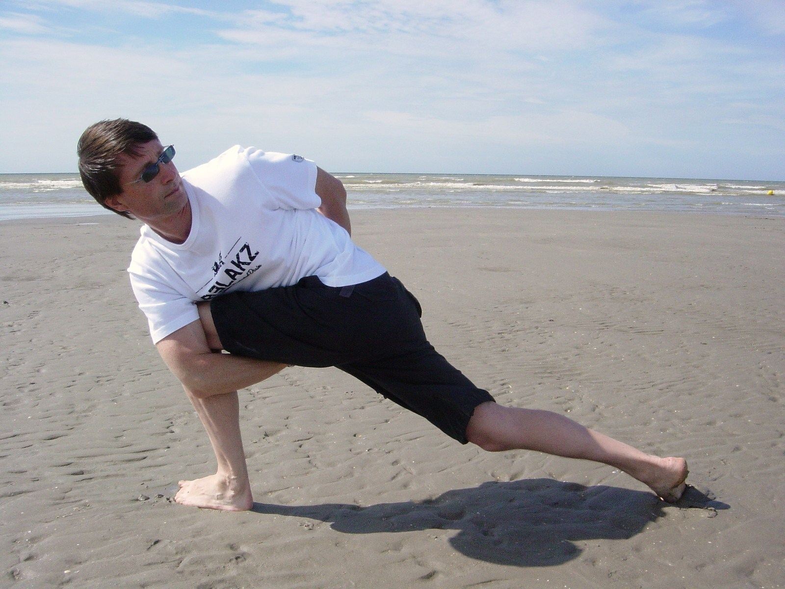

<div class="relative group fade-in" style="animation-delay: 0.2s;">
    <div class="aspect-[4/5] bg-gray-200 shadow-xl overflow-hidden rounded-sm transform group-hover:scale-[1.01] transition duration-500 grayscale grayscale-hover">
        
    </div>
    <div class="absolute -bottom-8 -left-8 bg-white p-6 shadow-2xl rounded-sm hidden md:block border border-gray-100 transform rotate-[-2deg]">
        <p class="text-sm font-medium text-[#1A2E1A]">"Tussen de stekjes vind je de <br>meeste focus."</p>
        <p class="text-xs text-gray-500 mt-1">— Marnix, oprichter Yogahof</p>
    </div>
    <div class="absolute top-4 right-4 bg-[#2B4C2B]/80 text-white text-xs px-3 py-1 rounded-full backdrop-blur-sm tracking-wide">Onze Plek</div>
</div>
